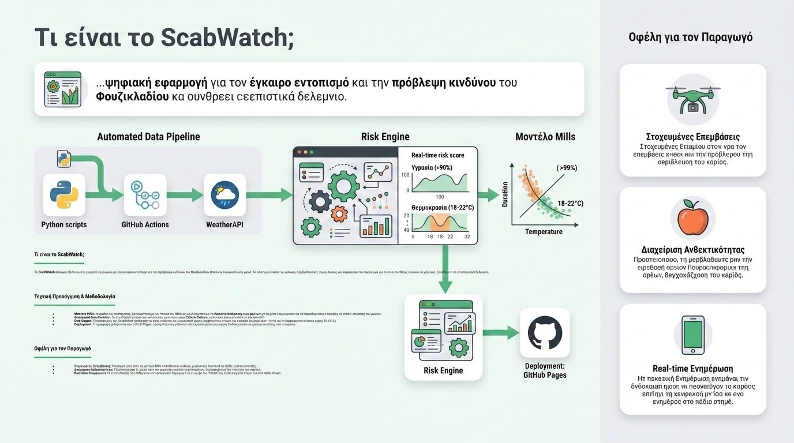

Η ραγδαία αστικοποίηση και η μείωση των καλλιεργήσιμων εκτάσεων παγκοσμίως ωθούν τη γεωργική επιστήμη πέρα από τα παραδοσιακά όρια του υπαίθρου αγρού. Η πιο ριζοσπαστική απάντηση σε αυτή την πρόκληση είναι η Κάθετη Καλλιέργεια σε Ελεγχόμενο Περιβάλλον (Vertical Farming / Controlled Environment Agriculture - CEA). Η προσέγγιση αυτή επιτρέπει την παραγωγή τροφίμων υψηλής ποιότητας μέσα στον αστικό ιστό, αξιοποιώντας εγκαταλελειμμένα κτίρια, αποθήκες ή ειδικά διαμορφωμένα containers, όπου κάθε παράμετρος της φυτικής ανάπτυξης ρυθμίζεται από υπολογιστικά συστήματα αυτοματισμού.
Στην καρδιά της κάθετης καλλιέργειας βρίσκεται η Υδροπονία (Hydroponics), η μέθοδος δηλαδή ανάπτυξης των φυτών χωρίς εδαφικό υπόστρωμα, όπου οι ρίζες εμβαπτίζονται απευθείας ή ψεκάζονται με ένα απόλυτα ισορροπημένο θρεπτικό διάλυμα νερού και λιπασμάτων. Στα κλειστά ανακυκλούμενα συστήματα (Closed-loop systems), το πλεονάζον νερό αποστραγγίζεται, φιλτράρεται, απολυμαίνεται με υπεριώδη ακτινοβολία (UV) και επαναχρησιμοποιείται. Η διαδικασία αυτή ελέγχεται σε πραγματικό χρόνο από ηλεκτροχημικούς αισθητήρες που μετρούν την Ηλεκτρική Αγωγιμότητα (EC) —η οποία υποδηλώνει τη συγκέντρωση των θρεπτικών αλάτων— και το pH, ρυθμίζοντας αυτόματα τις δοσομετρικές αντλίες.

Η αντικατάσταση της ηλιακής ακτινοβολίας επιτυγχάνεται μέσω εξειδικευμένων συστημάτων τεχνητού φωτισμού LED (Grow Lights). Αντί για το πλήρες φάσμα του φωτός, τα σύγχρονα συστήματα CEA εκπέμπουν συγκεκριμένα μήκη κύματος —κυρίως στο μπλε (450 nm) για τη διέγερση της βλαστικής ανάπτυξης και στο βαθύ ερυθρό (660 nm) για την ενίσχυση της φωτοσύνθεσης και της ανθοφορίας. Η ρύθμιση του Φωτοπεριοδικού Κύκλου και της Φωτοσυνθετικά Ενεργής Ακτινοβολίας (PAR) επιτρέπει τη βελτιστοποίηση του ρυθμού ανάπτυξης, μειώνοντας τον χρόνο παραγωγής των φυλλωδών λαχανικών σχεδόν στο μισό.
Τα επιστημονικά τεκμηριωμένα πλεονεκτήματα του Vertical Farming περιλαμβάνουν:
- Μέγιστη Εξοικονόμηση Πόρων: Λόγω της ανακύκλωσης του νερού και της εξάλειψης των απωλειών λόγω εξάτμισης ή έκπλυσης, τα υδροπονικά συστήματα CEA καταναλώνουν έως και 95% λιγότερο νερό και 90% λιγότερη έκταση γης σε σχέση με τις συμβατικές καλλιέργειες.
- Μηδενική Χρήση Φυτοφαρμάκων: Το απόλυτα ελεγχόμενο και αποστειρωμένο περιβάλλον αποτρέπει την είσοδο εντόμων, ζιζανίων και εδαφογενών παθογόνων, εκμηδενίζοντας την ανάγκη εφαρμογής χημικών σκευασμάτων.
- Σταθερή Παραγωγή Όλο τον Χρόνο: Η ανεξαρτητοποίηση από τις εξωτερικές κλιματικές συνθήκες (παγετοί, καύσωνες, χαλάζι) διασφαλίζει απρόσκοπτη εφοδιαστική αλυσίδα και σταθερή ποιότητα προϊόντων 365 ημέρες τον χρόνο.
Παρά το υψηλό αρχικό κόστος επένδυσης και την αυξημένη κατανάλωση ηλεκτρικής ενέργειας για τον φωτισμό και τον κλιματισμό (HVAC), η Κάθετη Καλλιέργεια αντιπροσωπεύει μια κομβική τεχνολογική σύγκλιση. Για τον σύγχρονο γεωπόνο-μηχανικό, η κατανόηση της δυναμικής των θρεπτικών διαλυμάτων και του βιομηχανικού αυτοματισμού CEA αποτελεί το διαβατήριο για τη δημιουργία ανθεκτικών, βιώσιμων και τοπικών συστημάτων διατροφικής ασφάλειας για τις μεγαλουπόλεις του μέλλοντος.